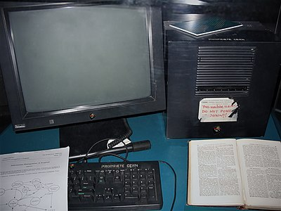
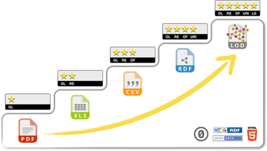

.jpg)
Timothy "Tim" John Berners-Lee (Londres, Inglaterra; 8 de junio de 1955) es un científico de la computación británico, conocido por ser el padre de la World Wide Web.
Estableció la primera comunicación entre un cliente y un servidor usando el protocolo HTTP en diciembre de 1990. En octubre de 1994 fundó el Consorcio de la World Wide Web (W3C).
Nació en el sudoeste de Londres el 8 de junio de 1955. Sus padres eran Conway Berners-Lee y Mary Lee Woods 1. Ambos eran matemáticos británicos.
Sus padres se conocieron en el desarrollo del Ferranti Mark I, el primer ordenador comercial, en marzo de 1951 2 3.
Estudió en el Queen's College de la Universidad de Oxford de 1973 a 1976, donde recibió un título de Física 4.
En 1978 escribió un sistema operativo trabajando en D.G. Nash Limited 5.

Berners-Lee usó esta NeXTcube en el CERN, y fue el primer servidor web del mundo.
Trabajó en el CERN en 1980 6. Propuso un proyecto basado en el hipertexto y construyó el programa ENQUIRE 7.
El 12 de marzo de 1989 desarrolló su primera propuesta de la Web 8.
Defiende la neutralidad de red 9 e introdujo el concepto de intercreatividad 11.

Esquema de cinco pasos para datos abiertos:
Se opuso a nombres de dominio nuevos como el '.mobi' 15. Argumentó que todos deberían acceder a la misma web desde cualquier dispositivo 16.